Chapter 8 Missing values, anomalies, structural shift
8.1 Missing values
Data loading.
## Plot variable not specified, automatically selected `y = value`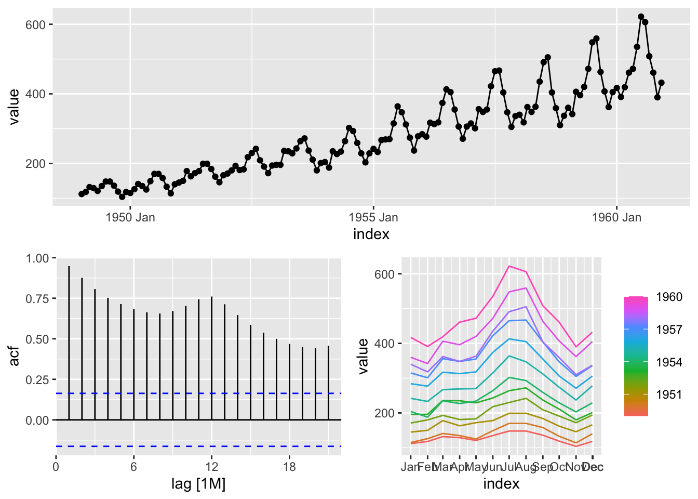
Create some NA’s.
lair <- log(AirPassengers)
lair_na <- lair
where_na <- c(5:6, 30:32, 70, 90:91, 110, 124)
lair_na[where_na] <- NAPlot NA’s.
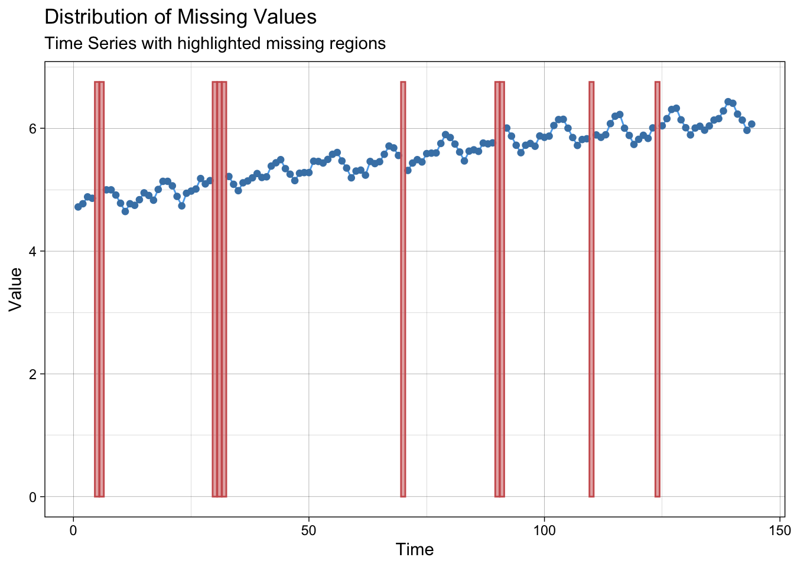
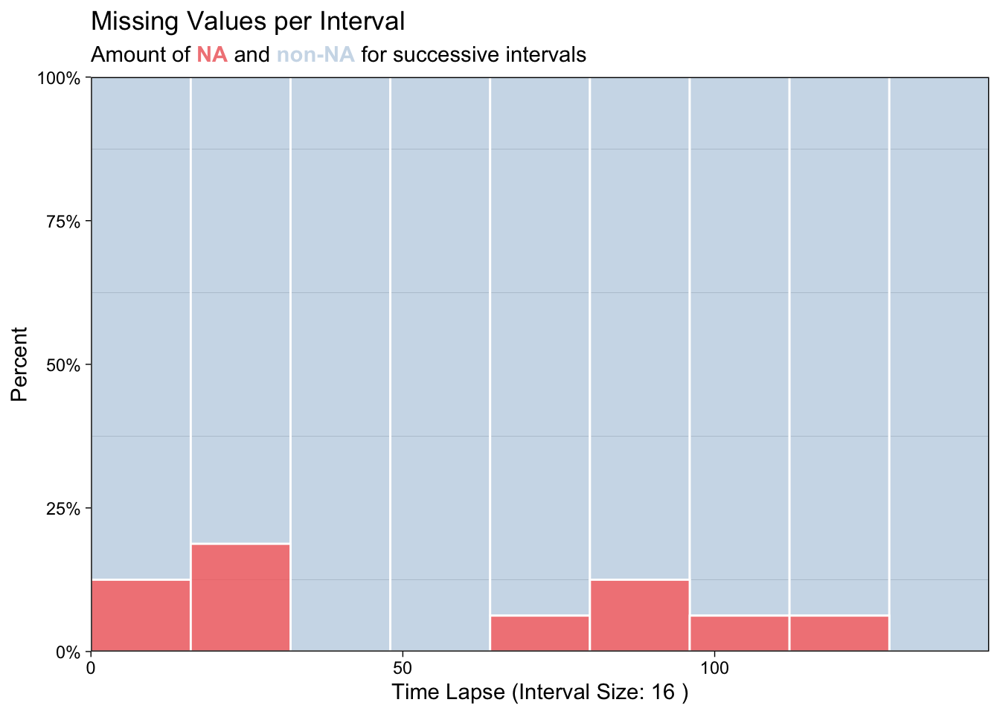
8.2 Outliers and anomalies
Make a table from AirPAssenger.
## # A tibble: 6 × 1
## pass
## <dbl>
## 1 112
## 2 118
## 3 132
## 4 129
## 5 121
## 6 135Add a new column for date.
## # A tibble: 144 × 2
## pass date
## <dbl> <date>
## 1 112 1949-01-01
## 2 118 1949-02-01
## 3 132 1949-03-01
## 4 129 1949-04-01
## 5 121 1949-05-01
## 6 135 1949-06-01
## 7 148 1949-07-01
## 8 148 1949-08-01
## 9 136 1949-09-01
## 10 119 1949-10-01
## # ℹ 134 more rowsPlot the data.
## Don't know how to automatically pick scale for object of type <ts>. Defaulting to continuous.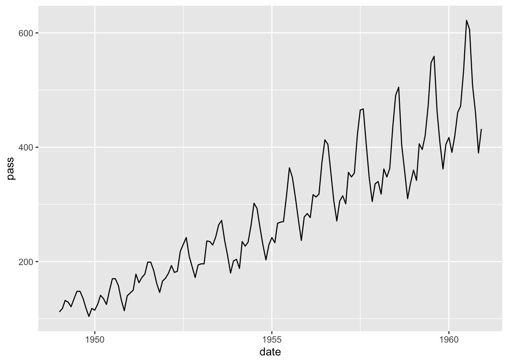
Make a log-transformation to stabilize the variance of the data.
## # A tibble: 144 × 3
## pass date ln_pass
## <dbl> <date> <dbl>
## 1 112 1949-01-01 4.72
## 2 118 1949-02-01 4.77
## 3 132 1949-03-01 4.88
## 4 129 1949-04-01 4.86
## 5 121 1949-05-01 4.80
## 6 135 1949-06-01 4.91
## 7 148 1949-07-01 5.00
## 8 148 1949-08-01 5.00
## 9 136 1949-09-01 4.91
## 10 119 1949-10-01 4.78
## # ℹ 134 more rowsPlot the transformed data.
## Don't know how to automatically pick scale for object of type <ts>. Defaulting to continuous.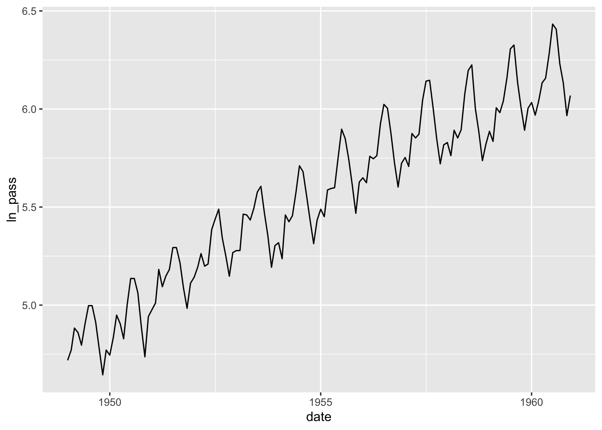
Make a couple of anomalies to try to identify them.
air4 <- air3 |> mutate(ln_pass_an = ln_pass)
air4$ln_pass_an[30] = 6
air4$ln_pass_an[110] = 5.3
qplot(data=air4, x = date, y = ln_pass_an, geom = 'line')## Don't know how to automatically pick scale for object of type <ts>. Defaulting to continuous.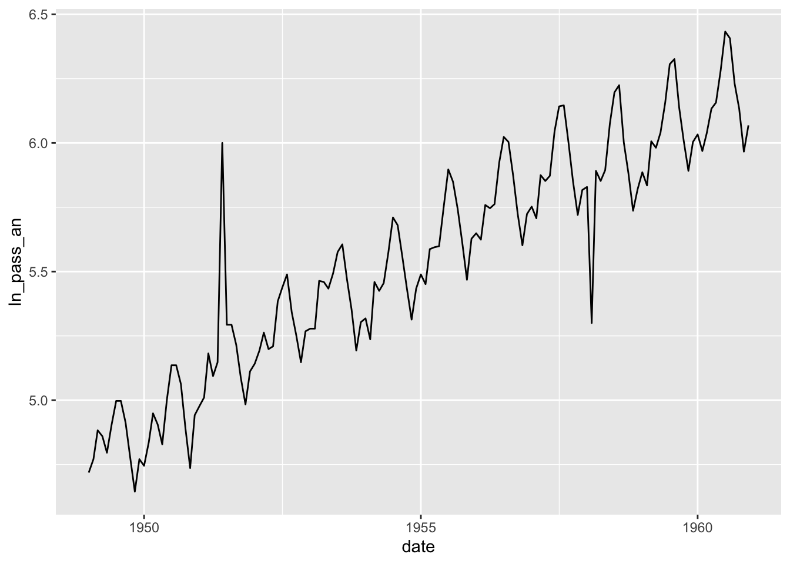
Run a STL decomposition to identify anomalies.
## Converting from tbl_df to tbl_time.
## Auto-index message: index = date## frequency = 12 months## trend = 36 months## # A time tibble: 144 × 5
## # Index: date
## date observed season trend remainder
## <date> <dbl> <dbl> <dbl> <dbl>
## 1 1949-01-01 4.72 -0.0826 4.76 0.0440
## 2 1949-02-01 4.77 -0.103 4.77 0.106
## 3 1949-03-01 4.88 0.0176 4.78 0.0866
## 4 1949-04-01 4.86 -0.0205 4.79 0.0909
## 5 1949-05-01 4.80 -0.00533 4.80 0.000921
## 6 1949-06-01 4.91 0.116 4.81 -0.0224
## 7 1949-07-01 5.00 0.218 4.82 -0.0427
## 8 1949-08-01 5.00 0.203 4.83 -0.0393
## 9 1949-09-01 4.91 0.0603 4.84 0.00788
## 10 1949-10-01 4.78 -0.0772 4.86 0.000617
## # ℹ 134 more rowsIdentify anomalies by reminder component.
## Rows: 144
## Columns: 8
## Index: date
## $ date <date> 1949-01-01, 1949-02-01, 1949-03-01, 1949-04-01, 1949-05-01, 1949-06-01, 1949-07-01, 1949-08-01, 1949-09-01, 1949-10-01, 1949-11-01, 1949-12…
## $ observed <dbl> 4.718499, 4.770685, 4.882802, 4.859812, 4.795791, 4.905275, 4.997212, 4.997212, 4.912655, 4.779123, 4.644391, 4.770685, 4.744932, 4.836282, …
## $ season <dbl> -0.082643367, -0.103229073, 0.017576244, -0.020530935, -0.005330328, 0.116378118, 0.217623611, 0.203169292, 0.060332081, -0.077241270, -0.22…
## $ trend <dbl> 4.757105, 4.767879, 4.778653, 4.789426, 4.800200, 4.811261, 4.822322, 4.833383, 4.844443, 4.855747, 4.867051, 4.878355, 4.889659, 4.901442, …
## $ remainder <dbl> 0.0440367731, 0.1060345664, 0.0865728814, 0.0909168770, 0.0009207448, -0.0223643024, -0.0427331355, -0.0393396512, 0.0078793378, 0.000617403…
## $ remainder_l1 <dbl> -0.1452773, -0.1452773, -0.1452773, -0.1452773, -0.1452773, -0.1452773, -0.1452773, -0.1452773, -0.1452773, -0.1452773, -0.1452773, -0.14527…
## $ remainder_l2 <dbl> 0.1439555, 0.1439555, 0.1439555, 0.1439555, 0.1439555, 0.1439555, 0.1439555, 0.1439555, 0.1439555, 0.1439555, 0.1439555, 0.1439555, 0.143955…
## $ anomaly <chr> "No", "No", "No", "No", "No", "No", "No", "No", "No", "No", "No", "No", "No", "No", "No", "No", "No", "No", "No", "No", "No", "No", "No", "N…Columns:
- date: date of observation
- observed: observed value
- season: seasonal component
- trend: trend component
- remainder: remainder component
- remainder_l1: left bound of the normal value
- remainder_l2: right bound of the normal value
- anomaly: whether the observation is an anomaly or not
Plot the anomalies.
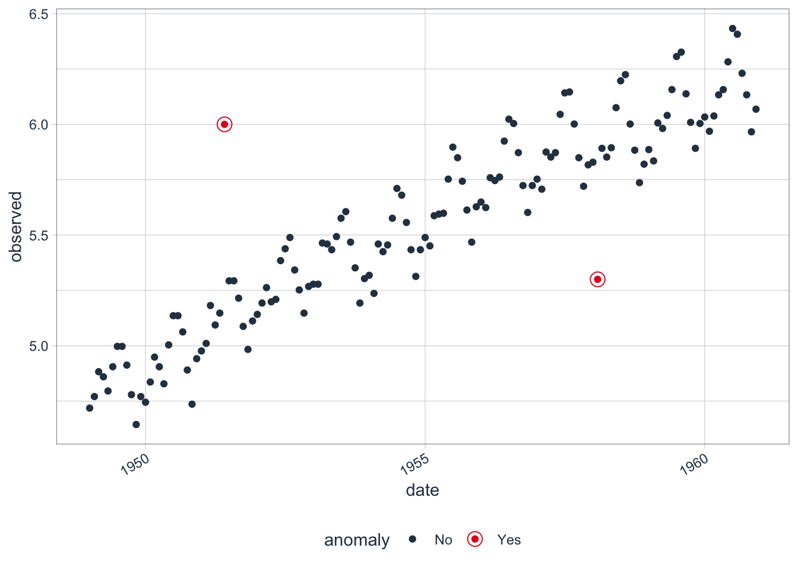
Recompose the left and right bounds into the original variable (transformed).
## Rows: 144
## Columns: 10
## Index: date
## $ date <date> 1949-01-01, 1949-02-01, 1949-03-01, 1949-04-01, 1949-05-01, 1949-06-01, 1949-07-01, 1949-08-01, 1949-09-01, 1949-10-01, 1949-11-01, 1949-1…
## $ observed <dbl> 4.718499, 4.770685, 4.882802, 4.859812, 4.795791, 4.905275, 4.997212, 4.997212, 4.912655, 4.779123, 4.644391, 4.770685, 4.744932, 4.836282,…
## $ season <dbl> -0.082643367, -0.103229073, 0.017576244, -0.020530935, -0.005330328, 0.116378118, 0.217623611, 0.203169292, 0.060332081, -0.077241270, -0.2…
## $ trend <dbl> 4.757105, 4.767879, 4.778653, 4.789426, 4.800200, 4.811261, 4.822322, 4.833383, 4.844443, 4.855747, 4.867051, 4.878355, 4.889659, 4.901442,…
## $ remainder <dbl> 0.0440367731, 0.1060345664, 0.0865728814, 0.0909168770, 0.0009207448, -0.0223643024, -0.0427331355, -0.0393396512, 0.0078793378, 0.00061740…
## $ remainder_l1 <dbl> -0.1452773, -0.1452773, -0.1452773, -0.1452773, -0.1452773, -0.1452773, -0.1452773, -0.1452773, -0.1452773, -0.1452773, -0.1452773, -0.1452…
## $ remainder_l2 <dbl> 0.1439555, 0.1439555, 0.1439555, 0.1439555, 0.1439555, 0.1439555, 0.1439555, 0.1439555, 0.1439555, 0.1439555, 0.1439555, 0.1439555, 0.14395…
## $ anomaly <chr> "No", "No", "No", "No", "No", "No", "No", "No", "No", "No", "No", "No", "No", "No", "No", "No", "No", "No", "No", "No", "No", "No", "No", "…
## $ recomposed_l1 <dbl> 4.529185, 4.519373, 4.650952, 4.623618, 4.649593, 4.782362, 4.894668, 4.891275, 4.759498, 4.633229, 4.501086, 4.627661, 4.661738, 4.652935,…
## $ recomposed_l2 <dbl> 4.818418, 4.808606, 4.940185, 4.912851, 4.938825, 5.071595, 5.183901, 5.180507, 5.048731, 4.922462, 4.790319, 4.916894, 4.950971, 4.942168,…Plot the decomposition.
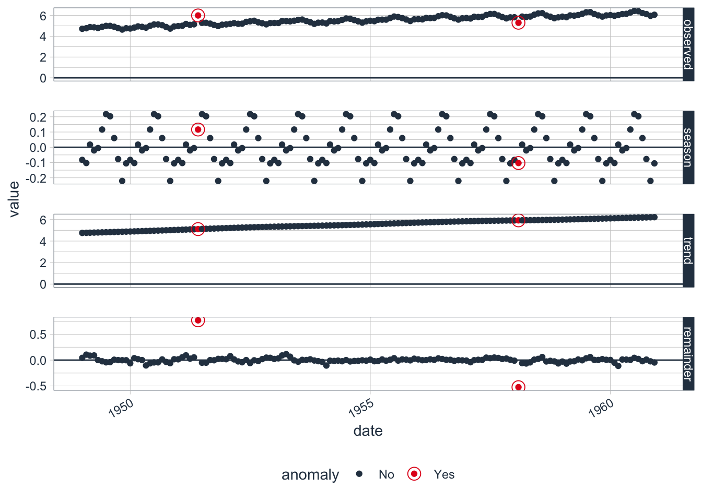
Clean the data into the origin series (transformed).
## Rows: 144
## Columns: 11
## Index: date
## $ date <date> 1949-01-01, 1949-02-01, 1949-03-01, 1949-04-01, 1949-05-01, 1949-06-01, 1949-07-01, 1949-08-01, 1949-09-01, 1949-10-01, 1949-11-01, 194…
## $ observed <dbl> 4.718499, 4.770685, 4.882802, 4.859812, 4.795791, 4.905275, 4.997212, 4.997212, 4.912655, 4.779123, 4.644391, 4.770685, 4.744932, 4.8362…
## $ season <dbl> -0.082643367, -0.103229073, 0.017576244, -0.020530935, -0.005330328, 0.116378118, 0.217623611, 0.203169292, 0.060332081, -0.077241270, -…
## $ trend <dbl> 4.757105, 4.767879, 4.778653, 4.789426, 4.800200, 4.811261, 4.822322, 4.833383, 4.844443, 4.855747, 4.867051, 4.878355, 4.889659, 4.9014…
## $ remainder <dbl> 0.0440367731, 0.1060345664, 0.0865728814, 0.0909168770, 0.0009207448, -0.0223643024, -0.0427331355, -0.0393396512, 0.0078793378, 0.00061…
## $ remainder_l1 <dbl> -0.1452773, -0.1452773, -0.1452773, -0.1452773, -0.1452773, -0.1452773, -0.1452773, -0.1452773, -0.1452773, -0.1452773, -0.1452773, -0.1…
## $ remainder_l2 <dbl> 0.1439555, 0.1439555, 0.1439555, 0.1439555, 0.1439555, 0.1439555, 0.1439555, 0.1439555, 0.1439555, 0.1439555, 0.1439555, 0.1439555, 0.14…
## $ anomaly <chr> "No", "No", "No", "No", "No", "No", "No", "No", "No", "No", "No", "No", "No", "No", "No", "No", "No", "No", "No", "No", "No", "No", "No"…
## $ recomposed_l1 <dbl> 4.529185, 4.519373, 4.650952, 4.623618, 4.649593, 4.782362, 4.894668, 4.891275, 4.759498, 4.633229, 4.501086, 4.627661, 4.661738, 4.6529…
## $ recomposed_l2 <dbl> 4.818418, 4.808606, 4.940185, 4.912851, 4.938825, 5.071595, 5.183901, 5.180507, 5.048731, 4.922462, 4.790319, 4.916894, 4.950971, 4.9421…
## $ observed_cleaned <dbl> 4.718499, 4.770685, 4.882802, 4.859812, 4.795791, 4.905275, 4.997212, 4.997212, 4.912655, 4.779123, 4.644391, 4.770685, 4.744932, 4.8362…The data are now without anomalies.
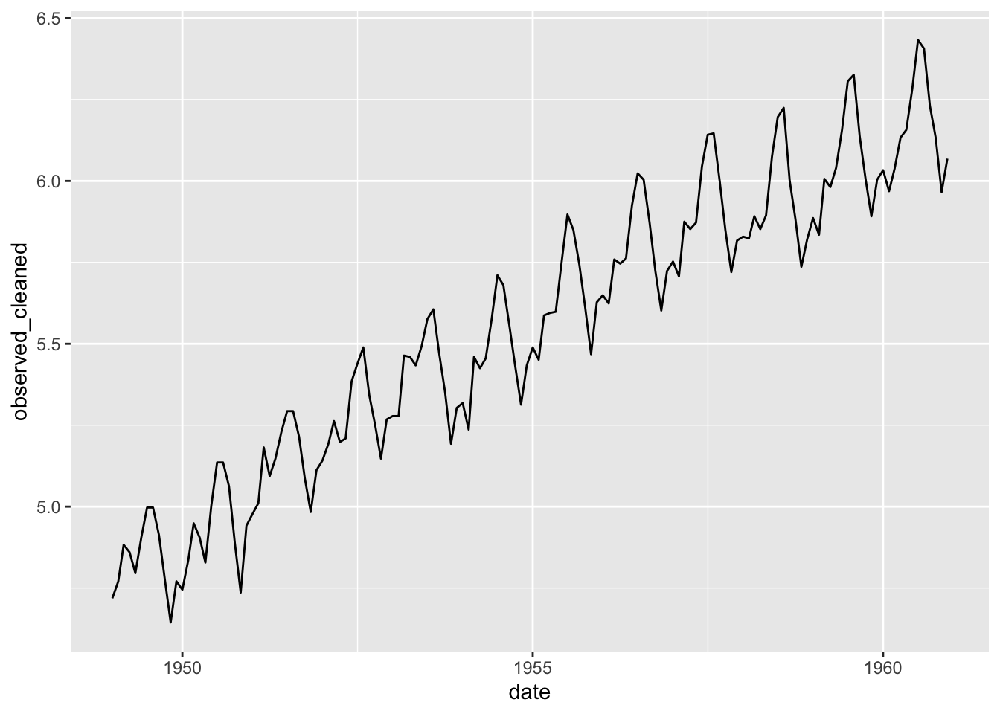
8.3 Structural shift
m <- import('https://github.com/akarlinsky/world_mortality/raw/main/world_mortality.csv')
glimpse(m)## Rows: 33,283
## Columns: 6
## $ iso3c <chr> "ALB", "ALB", "ALB", "ALB", "ALB", "ALB", "ALB", "ALB", "ALB", "ALB", "ALB", "ALB", "ALB", "ALB", "ALB", "ALB", "ALB", "ALB", "ALB", "ALB", …
## $ country_name <chr> "Albania", "Albania", "Albania", "Albania", "Albania", "Albania", "Albania", "Albania", "Albania", "Albania", "Albania", "Albania", "Albania…
## $ year <int> 2015, 2015, 2015, 2015, 2015, 2015, 2015, 2015, 2015, 2015, 2015, 2015, 2016, 2016, 2016, 2016, 2016, 2016, 2016, 2016, 2016, 2016, 2016, 20…
## $ time <int> 1, 2, 3, 4, 5, 6, 7, 8, 9, 10, 11, 12, 1, 2, 3, 4, 5, 6, 7, 8, 9, 10, 11, 12, 1, 2, 3, 4, 5, 6, 7, 8, 9, 10, 11, 12, 1, 2, 3, 4, 5, 6, 7, 8,…
## $ time_unit <chr> "monthly", "monthly", "monthly", "monthly", "monthly", "monthly", "monthly", "monthly", "monthly", "monthly", "monthly", "monthly", "monthly…
## $ deaths <dbl> 2490, 2139, 2051, 1906, 1709, 1561, 2008, 1687, 1569, 1560, 1728, 2010, 2065, 1905, 1910, 1652, 1716, 1678, 1643, 1578, 1459, 1743, 1855, 21…m2 <- m |>
filter(time_unit == 'monthly', country_name == 'Russia') |>
mutate(date = ymd(paste0(year, '-', time, '-01'))) |>
select(date, deaths)
qplot(data = m2, x = date, y = deaths, geom = 'line')
Make a STL decomposition.
## frequency = 12 months## trend = 58.5 months## # A time tibble: 117 × 5
## # Index: date
## date observed season trend remainder
## <date> <dbl> <dbl> <dbl> <dbl>
## 1 2015-01-01 176304. 18808. 160750. -3254.
## 2 2015-02-01 158060. -4507. 160503. 2063.
## 3 2015-03-01 173232. 5253. 160257. 7722.
## 4 2015-04-01 161394. -2331. 160011. 3714.
## 5 2015-05-01 163293 4958. 159765. -1430.
## 6 2015-06-01 154992. -5279. 159519. 753.
## 7 2015-07-01 152969. -4278. 159273. -2026.
## 8 2015-08-01 152152. -5196. 159028. -1679.
## 9 2015-09-01 148653. -6230. 158783. -3900.
## 10 2015-10-01 158130. 260. 158538. -669.
## # ℹ 107 more rowsFind a structural shift.
## Class 'cpt' : Changepoint Object
## ~~ : S4 class containing 12 slots with names
## cpttype date version data.set method test.stat pen.type pen.value minseglen cpts ncpts.max param.est
##
## Created on : Fri Dec 13 17:45:26 2024
##
## summary(.) :
## ----------
## Created Using changepoint version 2.3
## Changepoint type : Change in mean
## Method of analysis : AMOC
## Test Statistic : Normal
## Type of penalty : MBIC with value, 14.28652
## Minimum Segment Length : 1
## Maximum no. of cpts : 1
## Changepoint Locations : 64Look at the structural shift.
## # A time tibble: 1 × 2
## # Index: date
## date deaths
## <date> <dbl>
## 1 2020-04-01 152500.Plot the structural shift.
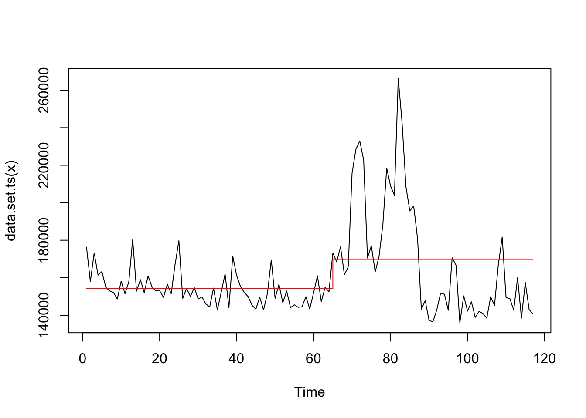
Apply 3 structural shifts searching.
## Warning in BINSEG(sumstat, pen = pen.value, cost_func = costfunc, minseglen = minseglen, : The number of changepoints identified is Q, it is advised to increase Q
## to make sure changepoints have not been missed.## Class 'cpt' : Changepoint Object
## ~~ : S4 class containing 14 slots with names
## cpts.full pen.value.full data.set cpttype method test.stat pen.type pen.value minseglen cpts ncpts.max param.est date version
##
## Created on : Fri Dec 13 17:45:27 2024
##
## summary(.) :
## ----------
## Created Using changepoint version 2.3
## Changepoint type : Change in mean
## Method of analysis : BinSeg
## Test Statistic : Normal
## Type of penalty : MBIC with value, 14.28652
## Minimum Segment Length : 1
## Maximum no. of cpts : 3
## Changepoint Locations : 64 69 87
## Range of segmentations:
## [,1] [,2] [,3]
## [1,] 64 NA NA
## [2,] 64 87 NA
## [3,] 64 87 69
##
## For penalty values: 6899445638 6899445638 5101474826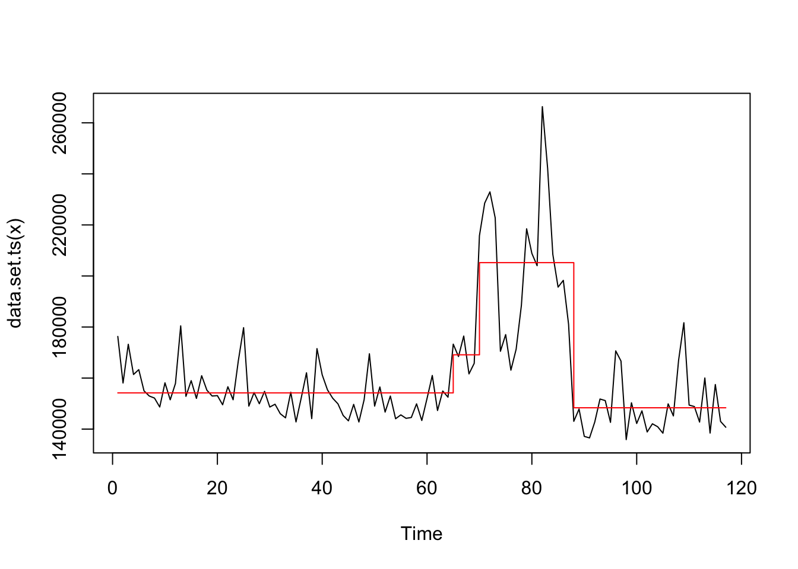
Apply to decomposed series.
## Class 'cpt' : Changepoint Object
## ~~ : S4 class containing 12 slots with names
## cpttype date version data.set method test.stat pen.type pen.value minseglen cpts ncpts.max param.est
##
## Created on : Fri Dec 13 17:45:27 2024
##
## summary(.) :
## ----------
## Created Using changepoint version 2.3
## Changepoint type : Change in mean
## Method of analysis : AMOC
## Test Statistic : Normal
## Type of penalty : MBIC with value, 14.28652
## Minimum Segment Length : 1
## Maximum no. of cpts : 1
## Changepoint Locations : 64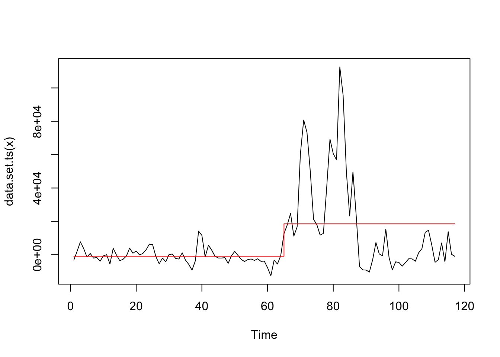
8.4 Bayesian Structural Model
Plot the data.
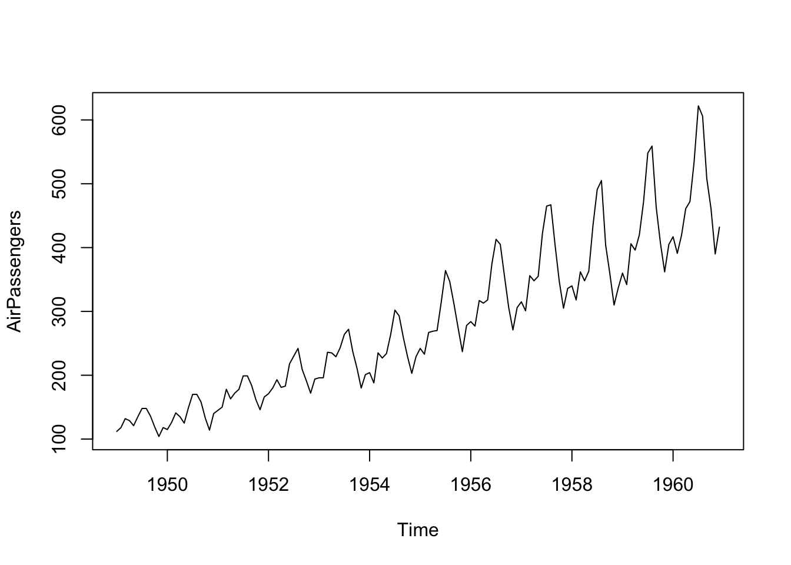
Log the data to stabilize the variance.
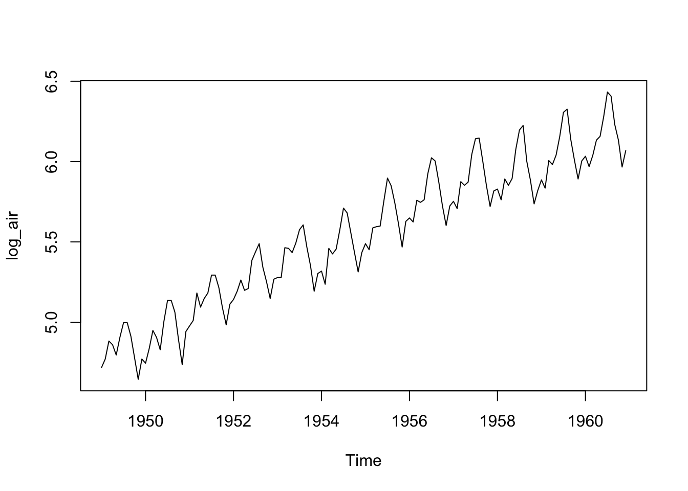
Observations:
- Stable variance of the transformed data
- There is a linear trend
- There is a seasonality
Step by step:
- Create an empty list
- Add a trend
- Add a season
- Run generation
## =-=-=-=-= Iteration 0 Fri Dec 13 17:45:27 2024 =-=-=-=-=
## =-=-=-=-= Iteration 200 Fri Dec 13 17:45:29 2024 =-=-=-=-=
## =-=-=-=-= Iteration 400 Fri Dec 13 17:45:30 2024 =-=-=-=-=
## =-=-=-=-= Iteration 600 Fri Dec 13 17:45:32 2024 =-=-=-=-=
## =-=-=-=-= Iteration 800 Fri Dec 13 17:45:34 2024 =-=-=-=-=
## =-=-=-=-= Iteration 1000 Fri Dec 13 17:45:35 2024 =-=-=-=-=
## =-=-=-=-= Iteration 1200 Fri Dec 13 17:45:37 2024 =-=-=-=-=
## =-=-=-=-= Iteration 1400 Fri Dec 13 17:45:39 2024 =-=-=-=-=
## =-=-=-=-= Iteration 1600 Fri Dec 13 17:45:40 2024 =-=-=-=-=
## =-=-=-=-= Iteration 1800 Fri Dec 13 17:45:42 2024 =-=-=-=-=- Plot the data
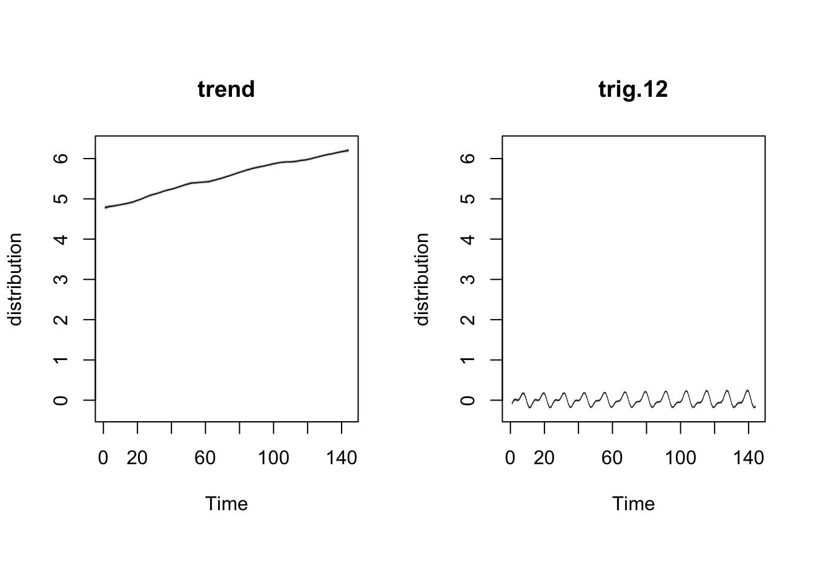
- Make forecasts.
## [1] 6.113840 6.159961 6.166569 6.188670 6.272479 6.411522 6.513412 6.496878 6.366737 6.209076 6.130153 6.150362 6.217765 6.266098 6.276450 6.293505 6.379757
## [18] 6.520091 6.620041 6.602211 6.474237 6.314879 6.233870 6.257077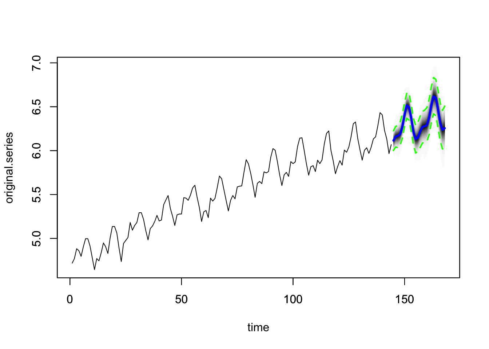
8.5 Causal impact
m <- import('https://github.com/akarlinsky/world_mortality/raw/main/world_mortality.csv')
glimpse(m)## Rows: 33,283
## Columns: 6
## $ iso3c <chr> "ALB", "ALB", "ALB", "ALB", "ALB", "ALB", "ALB", "ALB", "ALB", "ALB", "ALB", "ALB", "ALB", "ALB", "ALB", "ALB", "ALB", "ALB", "ALB", "ALB", …
## $ country_name <chr> "Albania", "Albania", "Albania", "Albania", "Albania", "Albania", "Albania", "Albania", "Albania", "Albania", "Albania", "Albania", "Albania…
## $ year <int> 2015, 2015, 2015, 2015, 2015, 2015, 2015, 2015, 2015, 2015, 2015, 2015, 2016, 2016, 2016, 2016, 2016, 2016, 2016, 2016, 2016, 2016, 2016, 20…
## $ time <int> 1, 2, 3, 4, 5, 6, 7, 8, 9, 10, 11, 12, 1, 2, 3, 4, 5, 6, 7, 8, 9, 10, 11, 12, 1, 2, 3, 4, 5, 6, 7, 8, 9, 10, 11, 12, 1, 2, 3, 4, 5, 6, 7, 8,…
## $ time_unit <chr> "monthly", "monthly", "monthly", "monthly", "monthly", "monthly", "monthly", "monthly", "monthly", "monthly", "monthly", "monthly", "monthly…
## $ deaths <dbl> 2490, 2139, 2051, 1906, 1709, 1561, 2008, 1687, 1569, 1560, 1728, 2010, 2065, 1905, 1910, 1652, 1716, 1678, 1643, 1578, 1459, 1743, 1855, 21…m2 <- m |>
filter(time_unit == 'monthly', country_name == 'Russia') |>
mutate(date = ymd(paste0(year, '-', time, '-01'))) |>
select(date, deaths)
qplot(data = m2, x = date, y = deaths, geom = 'line')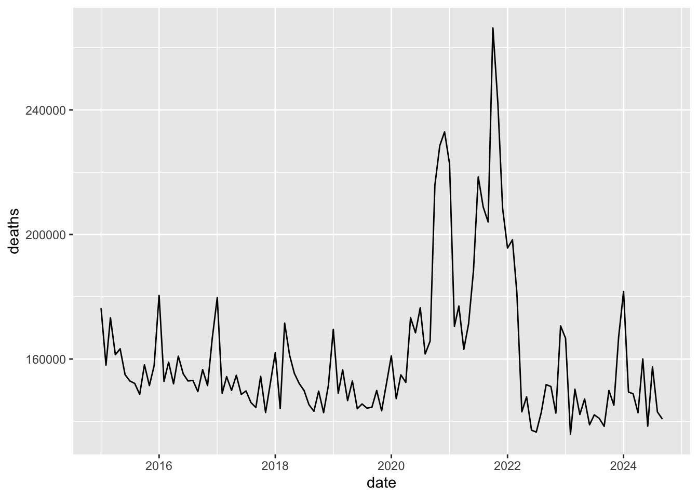
start_covid <- 61 # number of observation when the Covid has been started
impact <- CausalImpact(data = m2$deaths, pre.period = c(1, start_covid-1),
post.period = c(start_covid, nrow(m2)))## Posterior inference {CausalImpact}
##
## Average Cumulative
## Actual 168523 9605784
## Prediction (s.d.) 154347 (1779) 8797770 (101406)
## 95% CI [151058, 158022] [8610319, 9007261]
##
## Absolute effect (s.d.) 14176 (1779) 808014 (101406)
## 95% CI [10500, 17464] [598523, 995465]
##
## Relative effect (s.d.) 9.2% (1.3%) 9.2% (1.3%)
## 95% CI [6.6%, 12%] [6.6%, 12%]
##
## Posterior tail-area probability p: 0.00101
## Posterior prob. of a causal effect: 99.8995%
##
## For more details, type: summary(impact, "report")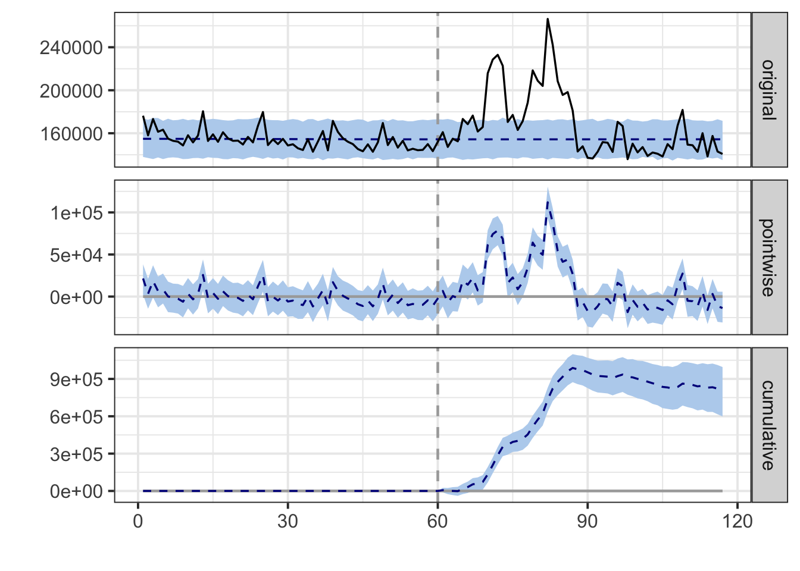
## Posterior inference {CausalImpact}
##
## Average Cumulative
## Actual 168523 9605784
## Prediction (s.d.) 154347 (1779) 8797770 (101406)
## 95% CI [151058, 158022] [8610319, 9007261]
##
## Absolute effect (s.d.) 14176 (1779) 808014 (101406)
## 95% CI [10500, 17464] [598523, 995465]
##
## Relative effect (s.d.) 9.2% (1.3%) 9.2% (1.3%)
## 95% CI [6.6%, 12%] [6.6%, 12%]
##
## Posterior tail-area probability p: 0.00101
## Posterior prob. of a causal effect: 99.8995%
##
## For more details, type: summary(impact, "report")## Analysis report {CausalImpact}
##
##
## During the post-intervention period, the response variable had an average value of approx. 168.52K. By contrast, in the absence of an intervention, we would have expected an average response of 154.35K. The 95% interval of this counterfactual prediction is [151.06K, 158.02K]. Subtracting this prediction from the observed response yields an estimate of the causal effect the intervention had on the response variable. This effect is 14.18K with a 95% interval of [10.50K, 17.46K]. For a discussion of the significance of this effect, see below.
##
## Summing up the individual data points during the post-intervention period (which can only sometimes be meaningfully interpreted), the response variable had an overall value of 9.61M. By contrast, had the intervention not taken place, we would have expected a sum of 8.80M. The 95% interval of this prediction is [8.61M, 9.01M].
##
## The above results are given in terms of absolute numbers. In relative terms, the response variable showed an increase of +9%. The 95% interval of this percentage is [+7%, +12%].
##
## This means that the positive effect observed during the intervention period is statistically significant and unlikely to be due to random fluctuations. It should be noted, however, that the question of whether this increase also bears substantive significance can only be answered by comparing the absolute effect (14.18K) to the original goal of the underlying intervention.
##
## The probability of obtaining this effect by chance is very small (Bayesian one-sided tail-area probability p = 0.001). This means the causal effect can be considered statistically significant.